Last winter, Territorial Seeds in Cottage Grove, Ore., surveyed its customers to see when they wanted their new seed catalog to arrive in the mail. The results: Gardeners want new catalogs as soon as holiday fever breaks in the last week of December.
Is it that we can’t wait to dive into a new season of gardening, or that it takes that long to figure out what we want? Perhaps a bunch of both. As I made late-season check-in calls to a dozen seed companies with organic inclinations, I discovered that gardeners’ desires are changing, and changing fast. From orange cauliflower to salad bar crops for the chicken yard, today’s organic gardeners have a long list of plans and dreams that begin with seeds. Here are 15 ways innovative gardeners are using seeds to make their gardens better than they have ever been.
Instead of short lists of mainstream vegetable seeds such as tomatoes and squash, customers are placing larger, more complicated orders that include gourmet goodies such as corn salad and bulb fennel. In addition, gardeners are planting gardens that start early and end late with the help of more cold-hardy vegetables.
“Last year we sold twice as much spinach as the year before,” says Ira Wallace. She keeps her eye on seed supplies for cooperatively owned Southern Exposure Seed Exchange in Mineral, Va. “People want things they can make real meals from every day, even if their garden is small,” she says.
Plenty of cool-season greens are key to getting a garden started early in spring, and making the bounty last well into fall.
The best gardens include great-tasting open-pollinated favorites that grow well in your region balanced with hybrids that satisfy special needs for earliness, high yields or pest resistance. Over time, your future seed orders will shrink in size as you save more of your own non-hybrid seeds - and trade them with your neighbors. This is exactly what C.R. Lawn, founder of Fedco Seeds in Waterville, Maine, has in mind.
“I have a dream that someday soon our communities will again produce seed as well as food to meet most of our needs, and seed companies such as Fedco will no longer or rarely be needed,” Lawn says.
The search for varieties should start close to home, because a variety that performs beautifully in South Dakota may be a dud in the warm, moist soils of Louisiana. Seed companies with organic trial acreage often use it to screen varieties, grow seed of crops that naturally grow well in the area, and set aside some space for the public good. Last year, the folks at Southern Exposure grew more than 50 varieties of tomatoes for the Heritage Festival tomato tasting at Monticello, near Charlottesville, Va. Across the country, in Cottage Grove, Ore., Territorial Seeds continued its nine-year tradition of hosting the Great Northwest Tomato Taste-Off.
A new regional resource has emerged in the South, where David Bradshaw recently enriched the variety list offered by the South Carolina Foundation Seeds Association with his personal picks, collected during the years he served as South Carolina’s extension horticulture specialist. If you want disease-resistant Southern peas or ‘O’Henry’ sweet potato (a white-fleshed version of ‘Beauregard’), South Carolina Foundation Seeds is the place to look.
If you want truly local seeds, be on the lookout for events such as the Gardener’s Seed Swap hosted by the Toledo (Ohio) Botanical Gardens. Begun several years ago by community gardens coordinator Michael Szuberla as a way to clear out his office storage closet, the swap has expanded into a two-day event that attracts more than 500 gardeners. In Canada, Seeds of Diversity holds “Seedy Saturday” seed swaps at more than 50 locations throughout the provinces. You might even form a “crop circle” in your own town - a loose association of friendly gardeners who meet a few times a year to share seeds, samples and good times. (See "Find the Seeds You Need," below, for how Mother Earth News can help you contact other gardeners in your community.)
Many hybrid varieties offer resistance to common diseases, but lately some open-pollinated varieties have had their resistance levels raised by talented plant breeders. If your cucumber-family crops go white with powdery mildew before the season ends, High Mowing Seeds can fix you up with ‘Sweet REBA’ acorn squash, ‘PMR Delicious 51’ cantaloupe, or ‘Success PM’ yellow straightneck summer squash - three of the best varieties recently bred at Cornell University in New York. Nichols Garden Nursery has ‘Hannah’s Choice’ cantaloupe, another disease-resistant Cornell variety with superior flavor and aroma. It’s also on Cornell’s Selected List of Vegetable Varieties.
If it’s trouble-tolerant tomatoes you’re after, you will be wise to include some hybrids in your garden, but they need not be cardboard commercial varieties. For example, ‘Country Taste’ from Park delivers rich tomato flavor while providing resistance to fusarium and verticillium wilt diseases. In similar style, Burpee’s bright orange ‘Sweet Tangerine’ offers vibrant fruity taste on tough, disease-resistant plants.
A growing number of gardeners want space-saving varieties that produce personal-size squash, broccoli or even chard. Fast growth in the garden coupled with kitchen convenience helped ‘Honey Bear’ acorn squash win a 2008 All America Selections award. Scaled-down versions of chard (‘Pot-o-Gold’), lettuce (‘Little Gem’ and ‘Garden Babies’), broccoli (‘Small Miracle’) and other vegetables perform as well in containers as in beds, so they’re real problem solvers if the only place you have to grow food is your deck or balcony.
Just when you thought tomatoes couldn’t get much prettier than ‘Green Zebra,’ one look at Burpee’s purplish-red ‘Razzle Dazzle’ tomato will make your eyes pop. ‘Redventure’ celery blushes crimson where the ribs are touched by the sun, ‘Purple Plum’ radishes really look like plums, and you can’t miss the pink pods of ‘Tanya’ pole beans when you’re filling your picking basket. Be bold - try that ‘Cheddar’ cauliflower that’s haunting your dreams. The seeds may cost you 25 cents each, but you can recoup the cost of a packet with one head of organic cauliflower. As a bonus, your cheese-colored head will have 25 times more beta carotene than a similar head of white cauliflower.
Many seed companies are working with vegetable breeders and seed growers to improve the quality and uniformity of open-pollinated varieties, which are preferred by gardeners who want to save at least some of their own seed.
“There is no reason why open-pollinated varieties bred to perform well in organic systems can’t be of equal quality to hybrids, for certain crops,” says Jodi Lew-Smith, vegetable breeder at High Mowing Seeds. Lew-Smith is in the early stages of developing better resistance to septoria leaf spot in tomatoes, but is farther along selecting higher quality open-pollinated zucchini, butternut and acorn squash.
In addition to working with “public” breeding lines, for example one of the parents Brent Loy at the University of New Hampshire used to create award-winning ‘Sugar Dumpling’ acorn squash, Lew-Smith uses varieties from Seed Savers Exchange, and often picks up interesting varieties when visiting growers of organic seed. “These people put an extraordinary amount of effort into growing seed, which can be a jackpot crop for everyone when things turn out well,” Lew-Smith says.
The idea of an instant herb garden has inspired many products that look good but don’t work very well, because new gardeners have trouble working with tiny herb seeds. A new solution from Johnny’s Selected Seeds - properly spaced herb seeds embedded in a paper disk - was so wildly successful last year that more are planned for 2009 including basil, cilantro, chives, marjoram, parsley and thyme. Each disk plants a 6-inch pot, and requires nothing more than a pot, a bit of potting soil, and some water to get it started.
The easiest way to eat from your garden all winter is to grow plenty of vegetables that store well just as they are - garlic, potatoes, grain corn, sweet potatoes, onions and winter squash, for example. Varieties of garlic, onions, potatoes and sweet potatoes grow better in some climates than others, so it’s a good idea to look to regional seed companies to see which varieties they recommend.
Not so with go-anywhere winter squash. “I know we have a disproportionate number of winter squash, but it’s gonna get worse,” says Rose Marie Nichols-McGee, president of Nichols Garden Nursery in Albany, Ore. “I’m caught between the new hybrids and heirlooms, and with winter squash, the heirlooms really shine.”
Last summer, the I-Dig-My-Garden online forum hosted by Baker Creek Heirloom Seeds came alive when people started discussing prolific, heat-resistant yard-long beans (Vigna unguiculata), particularly the ‘Red Noodle’ variety. Long popular for early summer planting in Texas and Oklahoma, and resistant to Japanese beetles as well as high heat, these vigorous, long-vined cousins of blackeyes keep setting pods in heat that causes other snap beans to abort their blossoms. Limas are enjoying a popularity spike, too, especially ‘Fordhook 242’ and ‘Henderson Bush.’
Why buy a packet of one type of lettuce seeds when you can have six varieties for the same price? Most seed companies sell pre-blended lettuce mixtures; rainbow mixtures of beets, carrots, radishes and chard are easy to find, too. The seeds in many of the mixtures created by Renee Shepherd are color-coded to help you tell the varieties apart.
At Bountiful Gardens in Willits, Calif., grains for the garden are flying off the shelves. “People want to be self-sustaining. It’s the only way we can keep the future secure for our kids,” says office manager Carrie Perkins. Gardeners who want to grow their own nutritious grains for grinding into flours can try wheat, spelt or triticale (a wheat/rye cross), but Perkins says that a lot of people are looking for wheat alternatives, too. “Amaranth is pretty in the garden, good to eat, and the greens are good for eating or composting,” she says.
Delicate baby lettuce is thrilling, and crunchy heads make for endlessly interesting salads. But how much time do you spend picking, cleaning, chilling and serving your beautiful greens? Enter what growers are calling “one-cut” lettuce - varieties that can be harvested and cleaned intact, then prepared for the table with a single cut made about 1 inch above the crown. Voila! A perfect cluster of leaves falls away, ready to swish through cool water and spin dry. ‘Sargent,’ an oak leaf variety, is easy to handle this way.
“If you want your chickens to produce eggs with those high omega-3 fatty acids, they need to have fresh greens,” Nichols-McGee says. She chose the plants for her Chicken Greens Mix based on their ability to regrow after cutting. After the tyfon, lettuces, mustards and kale have been cut back two or three times, you can pen your birds over the planting and let them finish it up, or pull up the plants and toss them into your chicken yard. The plants in the Chicken Greens Mix can be eaten by people, too, but the blends Glenn Drowns sells at Sandhill Preservation Center are meant to be buffets solely for poultry.
Sweet alyssum, bachelor buttons, corn poppies, and many other easy annual flowers attract nectar-seeking beneficial insects and make the garden a more beautiful place. Look for ways to put flowers to work doing multiple jobs. (To learn more, see 10 Easy and Useful Flowers.) For example, you can eat the blossoms and immature seeds of nasturtiums, and their spreading growth habit smothers weeds. Dwarf French marigolds help starve out rootknot nematodes, and dried calendula blossoms can be used to make skin-soothing lotions. These and many other flowers are easy to grow from seed, and some reseed themselves year after year.
Last summer, most seed companies saw sales of vegetable and culinary herb seeds soar by 20 percent to 40 percent, which led to rumors of an imminent seed shortage. But don’t worry. Most seed companies saw it coming. There had been modest, steady growth in sales for the previous two years, so most companies were ready with a two-year supply of their most popular varieties. But do be prepared to order early, because gardening to put food on the table is truly catching on. When Dan Jason, owner of Salt Spring Seeds in British Columbia, put together a “Zero Mile Diet” collection that included regionally adapted grains, beans and vegetables, the supply didn’t even make it until July.
More seeds than ever are being readied for this year’s gardens, and even if unexpected crop failures cause spotty shortages, companies with online catalogs can quickly offer substitutions. “The Net lets us be much more nimble,” says Denise Smith, horticulturalist for Park Seed. “If a grower has seeds or plants that are ready between catalogs, we can offer it to customers right away as an Internet special,” Smith says. For example, last summer Park used the Web to offer 10 types of organic vegetable and herb seeds that were not in the catalog, and that number continues to grow.
At Mother Earth News, we know the joys and frustrations of thumbing through seed catalogs. It’s fun to browse, and sometimes you find everything you need. But sometimes there are varieties you want to try and just can’t track down. Plus, there are over 500 mail-order companies that offer vegetables, fruit, herbs, nuts, grains and more. That means there are great “new” companies out there offering varieties that you haven’t heard about yet! With that in mind, we’ve created these new online tools that will make garden shopping much easier.
Are you looking for a particular vegetable, herb or flower variety and can’t spot it in your favorite catalogs? Our new Mother Earth News Seed and Plant Finder lets you quickly search the online catalogs of more than 500 mail-order seed and plant companies.
The Finder uses the Google search engine, but limits the search only to the seed companies we’ve listed, so you get cleaner search results without as much “clutter.”
All you have to do is type the variety you’re looking for in the search box, and you’ll get a list of links to the companies offering that variety. (For variety names with two or more words, put the entire name inside quotation marks for the best results.) You can also search for any crop and browse the newest or rarest selections.
We have another search set up specifically for finding organic pest controls and gardening supplies. Check out the Organic Pest Control and Garden Products Finder now.
To help you get acquainted with more companies, we’ve invited the 500 that are included in our Seed and Plant Finder to register in our new National Directory of companies offering mail-order seeds and plants.
This new directory will help you learn more about your favorite seed companies, and discover new ones to check out. You can find seed companies located in your area that are most likely to have seeds adapted to your region.
You also can track down companies specializing in nuts, berries, herbs, grains or cover crops, or those that offer a high number of organic seeds or heirloom varieties. You can find it here.
Want to organize a seed swap event for your community? Mother Earth News will help. If you will send us an announcement about your event at least three weeks in advance, along with a list of your local ZIP codes, we will relay the announcement to other Mother Earth News readers in your area.
To learn more about how we can help you arrange seed swaps and how to send us information about your events, click here.
|
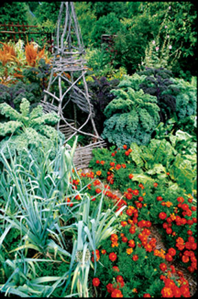 LYNN KARLIN Plan your seed orders now and make this year’s garden bigger and more bountiful than ever before. |
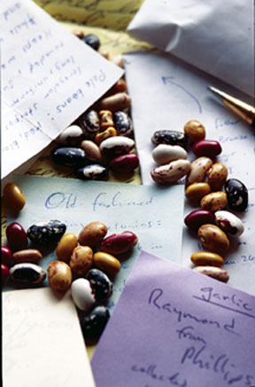 LYNN KARLIN By saving seeds from your own garden you can breed plants suited to your region. |
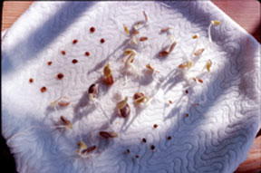 WALTER CHANDOHA This is how it begins! Here’s what seeds look like as they begin to sprout. |
|
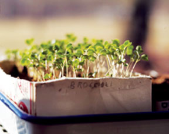 WALTER CHANDOHA More seed starting fun: These broccoli seedlings are really beginning to grow. |
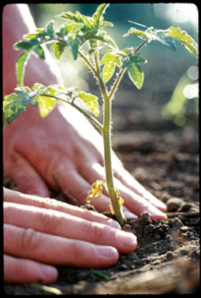 DAVID CAVAGNARO Of course you can buy seeds by mail order, but if you don’t want to start seeds yourself, another option is to order live plants. |
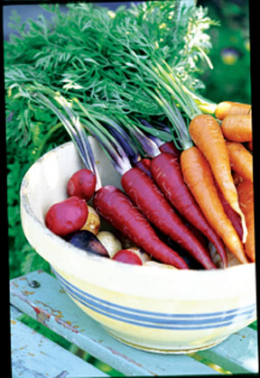 LYNN KARLIN Who ever said carrots have to be orange? Many gardeners are choosing vegetable varieties in a rainbow of colors. |
|
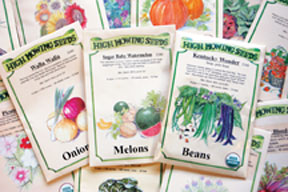 HIGH MOWING SEEDS The demand for seeds is soaring, so place your orders early! |
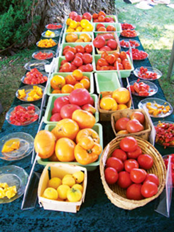 SOUTHERN EXPOSURE SEED EXCHANGE Samples of flavorful tomato varieties at the Harvest Heritage Festival at Monticello, near Charlottesville, Va. |
MICHAEL SZUBERLA Gardeners exchange and discuss seeds at this community seed swap in Toledo, Ohio. |
|
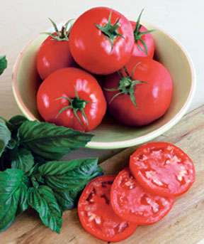 BURPEE One look at Burpee’s purplish-red ‘Razzle Dazzle’ tomato will make your eyes pop. |
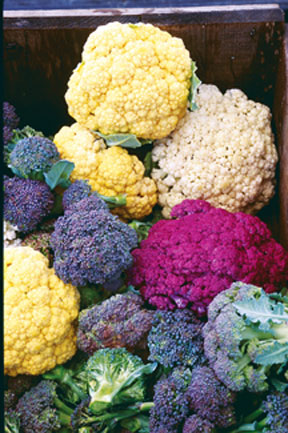 LYNN KARLIN Colorful cauliflower and broccoli are both edible and eye-catching. |
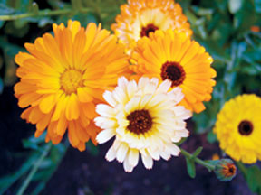 BARBARA PLEASANT More plants that are both beautiful and useful: Calendula is one of many multipurpose flowers.both medicinal and ornamental. |